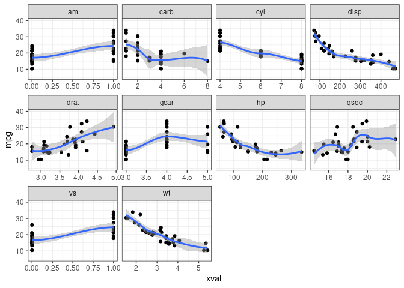
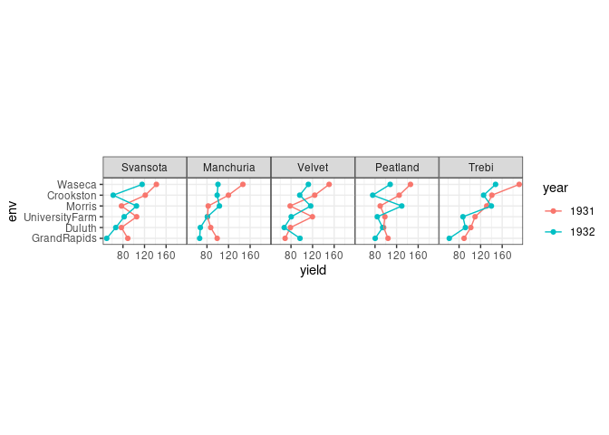
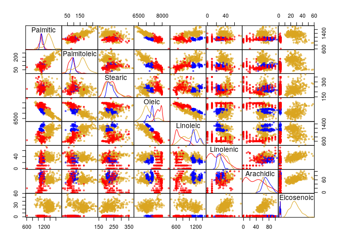
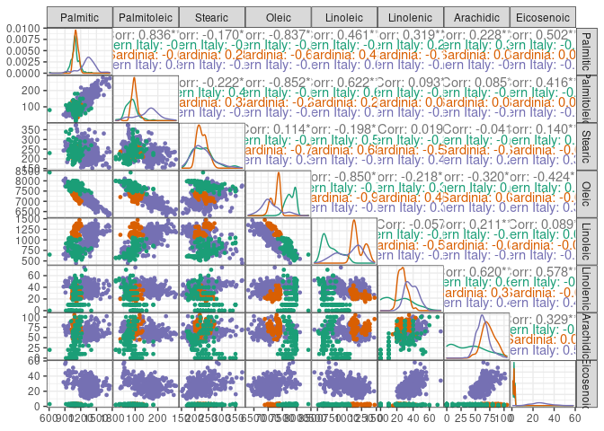
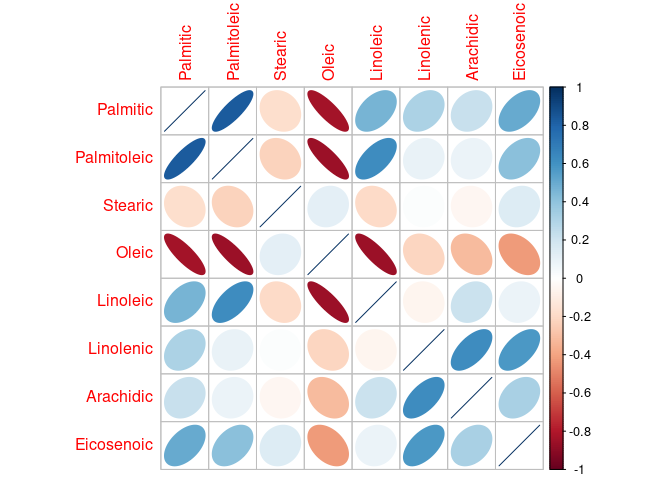
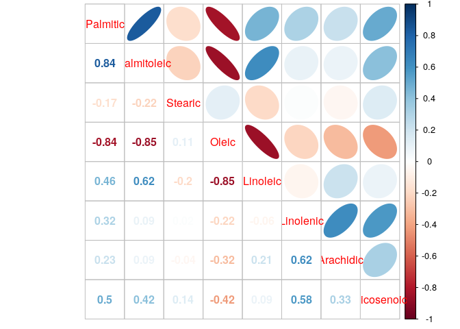

library(pgmm) ## for olives data
library(skimr) ## for text-based summaries
library(ggplot2); theme_set(theme_bw())
library(GGally) ## pairs plots etc.
library(corrplot) ## correlation plots
library(dplyr) ## data manipulation
library(tidyr)
library(readr) ## read CSV files
library(agridat) ## agricultural data setsspan to get smoother resultmethod.args = list(degree=1) to get locally linear fit …formula = y ~ s(x,k=10,bs="cs"))method.args = list(family=poisson) to account for data rangesformula= y ~ poly(x,2)method.arg=list(family=...) as appropriate“melt” data to long format (gather(), pivot_longer())
cars_long <- pivot_longer(mtcars,
-mpg, ## DON'T melt mpg
names_to="xvar",values_to="xval")
g1 <- (ggplot(cars_long,aes(xval,mpg)) +
geom_point()+
facet_wrap(~xvar,scale="free_x")+
geom_smooth()
)print(g1)
## `geom_smooth()` using method = 'loess' and formula 'y ~ x'
data(olive,package="pgmm")
data(fisher.barley,package="agridat")library("sos")
findFn("barley") ## full-text search of CRAN
?RSiteSearch ## similar
help.search("barley",agrep=FALSE) ## search in *installed* packageff <- (fisher.barley
%>% mutate(gen=reorder(gen,yield),
env=reorder(env,yield),
year=factor(year))
%>% arrange(gen,env)
)gg0 <- (ggplot(ff,
aes(x=env,y=yield,colour=year,group=year))
## geom_boxplot(aes(x=gen,y=yield,fill=factor(year)))
+ geom_point()+geom_line()
+ facet_wrap(~gen,nrow=1) ## 1-row layout
)print(gg0)Hard to see x-axis labels: try rotating? coord_flip() doesn’t interact well with faceting (see also ggstance)
gg0_h <- (ggplot(ff,
aes(y=env,x=yield,colour=year,group=year))
## geom_boxplot(aes(x=gen,y=yield,fill=factor(year)))
+ geom_point()
+ geom_path()
+ facet_wrap(~gen,nrow=1)
+ theme(panel.spacing=grid::unit(0,"lines"))
+ coord_fixed(ratio=20)
)print(gg0_h)
maybe use ncol=1, coord_fixed(ratio=1/20)? Then yields would be aligned along the same axis (but a tall skinny plot might not be convenient)
Could calculate differences …
## restore names to data set
olive_regions <-
read_csv("data/olive_regions.csv")
olive2 <-
(full_join(olive_regions,olive,
by=c("region_num" = "Region",
"area_num" = "Area"))
%>% select(-c(region_num,area_num))
%>% mutate_at(c("region","area"),factor)
)
colvec <- c("red","blue","goldenrod")First a pairs plot in base R:
panel.density <- function(x, ...) {
usr <- par("usr"); on.exit(par(usr))
par(usr = c(usr[1:2], 0, 1.5) ) ## modify y limits
h <- lapply(split(x,olive2$region),density)
for (i in 1:length(h)) {
lines(h[[i]]$x,h[[i]]$y/max(h[[i]]$y),col=colvec[i])
}
}
num_cols <- 3:ncol(olive2)pairs(olive2[,num_cols],
gap=0, ## no spaces
cex=0.5, ## smaller points
col=colvec[olive2$region],
diag.panel=panel.density)
This took significant hacking to get the way I wanted it!
## https://stackoverflow.com/questions/37889222/change-colors-in-ggpairs-now-that-params-is-deprecated
ggp1 <- ggpairs(olive2,
lower=list(continuous= function(data,mapping,...) {
(ggally_points(data,mapping,..., size=1)
+ scale_colour_brewer(palette="Dark2")
)
}),
diag = list(continuous=function(data,mapping,...) {
(ggplot(data,mapping)
+ geom_density(...)
+ scale_colour_brewer(palette="Dark2")
)
}),
upper = list(continuous=function(data,mapping, ...) {
(ggally_cor(data,mapping,...)
+ scale_colour_brewer(palette="Dark2")
)
}),
columns=num_cols,
mapping=aes(colour=region))
## https://github.com/ggobi/ggally/issues/14
theme_set(theme_bw()+ theme(panel.spacing=grid::unit(0,"lines")))print(ggp1)
car::scatterplotMatrix(olive2[,num_cols],
groups=olive2$region,
gap=0)
What about just showing correlations? (Probably not “exploratory”.)
library(corrplot)
corrplot(cor(olive2[,num_cols]),method="ellipse")
corrplot.mixed(cor(olive2[,num_cols]),lower="number",upper="ellipse")